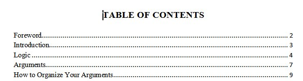
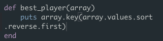
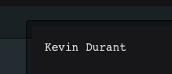

Let's talk about hashes
Not hashbrowns, not #hashtags, not hashish. I mean hashes in Ruby. Hashes are about storing data. Hashes are similair to a table of contents, like the one below.

Except, instead of a subject tied to page number, hashes pair a key with a value. You can later manipulate this data by applying methods to the hash.
For example, we can use a hash to keep track of how well your favorite basketball players are doing in terms of points. We are going to create a hash (points2014) that stores the average points per game for basketball players.

Each player is a key. The Average Points/Games are the value. Now we can use Ruby to extract the information we want from this data. Let's say I want to know who the top scorer is. I would create a function (best_player) that uses the points values to return the name of the top scorer.

In this method, we are asking the method (best_player) to use the array (points2014). We are asking the method to put (aka: display) a key value (name of a player) according to the conditions in the parenthesis. Inside the paranthesis, we are taking the values for the array, sorting them in ascending order, then reversing that order, so the highest number will be on top. Finally, we are asking to take the first value in the newly ordered list, and display the key.

That is correct! If you go back and look at the original, Kevin has the most points, with 32 points/game average.
I know this example is very easy, and it would be much easier to look at the list of 7 players to find out who has the most. But this method is useful because you can store a much larger amount of data and call much more methods onto the data to manipulate it depending on what you want to know. Want to find out how many people with the last name Hernandez, in the 30's live in you city? You can do that with hashes. Want to know how many products under $25 dollars the corner store sells? Hash it! Use hashes for all your Ruby data needs.